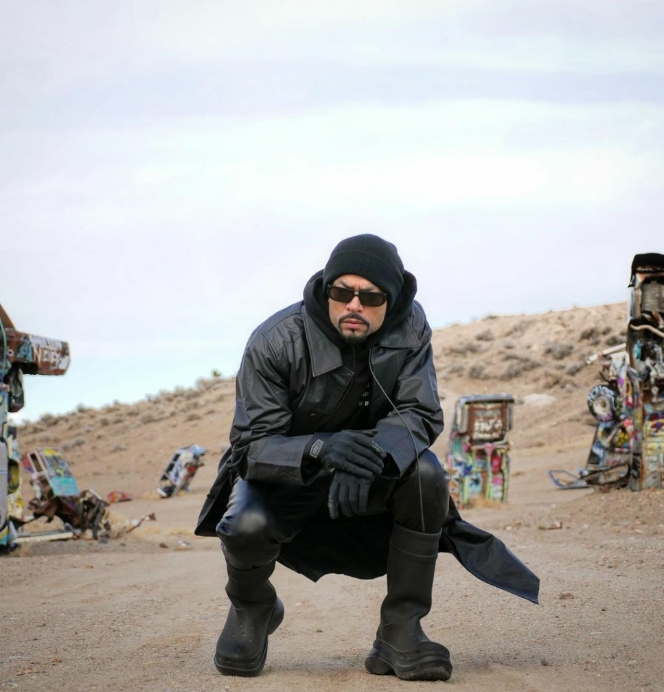

HOPSICKLEZZ!
1 / 3

2 / 3

3 / 3

Indian hip hop is a part of the South Asian hip hop culture, is a genre of popular music developed in India. Desi Hip hop is a term for music and culture which combines the influences of hip hop and the Indian subcontinent; Apache Indian, UK artist of Indian origin, was the earliest to make an impact on the UK charts with a series of hits during the nineties.
Baba Sehgal introduced Hindi rap in the nineties with his albums.In the 2000s the desi hop scene remained limited largely to the underground, with a very niche loyal audience. Hip-hop culture, including graffiti and b-boying started seeping into the club scene and street culture of big cities like Delhi and Mumbai.
For the India audience was attracted towards the hip hop culture after the release of the International Villager album of well-known Desi Hip hop artist Honey Singh, there was a huge blow up in the rap culture after this album and Pakistani artist Imran Khan and Bohemia are equally credited for blowing up the scene as Imran Khan released his album Unforgettable which has some super hits like Bewafa and Amplifier which are still fresh and people love listening to them where as Bohemia with his album Paisa Nasha Pyaar promoted Punjabi rap scene and evolved as one of the biggest Punjabi rap artist. Both Imran Khan and Bohemia were mainly Punjabi Rap Artist and gave super hits when there was no Hip hop culture.
People think rap is a music In which you just have to rhym words and spit them but then Young Propzekt (Now KR$NA) released a song in 2010 called Kaisa mera desh during Common Wealth Games 2010. This track was an anti corruption track which made such a influence It became the first Indian hip hop song on YouTube and earning a #2 ranking as one of the most watched music videos in India overnight following its release.In 2018 the scene again was blown up after Raftaar and Emiway beef in which there were diss track on each other by each of them which led to the growth of Indian Hip Hop Mumbai and Delhi are the cities where hiphop culture is mostly followed and many big names in HIP HOP are from these two cities only Zoya Akhtar, a well-known Indian director was impressed from the songs of Divine and Naezy decided to make a film on desi hip hop called Gully Gang in which Ranveer Singh and Alia Bhatt were casted. It was a big win for desi hip hop again as more and more audience started listening to this genre and it helped many people to depict their condition,feelings through raps.